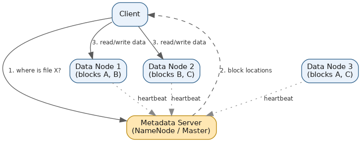

Distributed File Systems
Table of Contents
Overview
A single disk, no matter how large, is eventually a dead end: it caps how much data you can store, and if it dies, whatever it was holding goes with it. A distributed file system (DFS) solves both problems at once by spreading files across a cluster of ordinary machines while making that whole cluster look, from the outside, like one simple filesystem. Applications and clients still just say "give me file X" — they never need to know (or care) which of potentially thousands of machines actually holds the bytes. This page walks through what a DFS is, the architecture that makes it work, and the individual components that combine to deliver durability, availability, and scale.
What Is a Distributed File System?
A DFS takes files, breaks them into fixed-size chunks or blocks, and scatters those blocks across many machines, coordinating everything behind the scenes so the storage layer can grow far beyond what any single machine could hold. The motivation boils down to three things: scale (add more machines rather than hitting a ceiling on one), durability (don't lose data when hardware fails), and availability (keep serving requests even while parts of the cluster are unhealthy). To get durability, a DFS keeps several replicas of every block on different machines — three copies is the common default in systems like the Google File System (GFS) and Hadoop's HDFS — and the whole design treats machine failure as a routine, expected event rather than a rare emergency worth panicking over.
Several real-world systems are built on this idea. GFS is Google's internal system, described in a well-known 2003 paper, built to handle enormous files and constant appends across thousands of commodity machines. HDFS is the open-source system heavily inspired by GFS that sits at the center of the Hadoop big-data ecosystem. Ceph is an open-source, unified storage system that can present itself as object, block, or file storage depending on what's needed. And cloud services like Amazon S3 (object storage) and Amazon EFS (a managed, shared distributed file system that many compute instances can mount at once) round out the picture — S3 is technically an "object store" rather than a classic hierarchical filesystem, but under the hood it relies on exactly the same principles: data spread and replicated across many machines and exposed through one simple interface.
Architecture of a Distributed File System
Most classic distributed file systems are built around two very different kinds of nodes: a small number of nodes that manage metadata, and a much larger number of nodes that store the actual file bytes.
The metadata node — the NameNode in HDFS, or the master in GFS — is the "table of contents" for the entire filesystem. It tracks the directory structure, file names, permissions, and, critically, which physical machines hold which blocks of each file. Because metadata is tiny compared to the data it describes, this node can typically hold its entire map in memory, letting it answer questions like "which machines have block 7 of this file?" almost instantly. Actual file bytes never pass through the metadata node at all — it just points clients in the right direction and gets out of the way, which is exactly what keeps it from becoming a bottleneck.
The data nodes — DataNodes in HDFS, chunkservers in GFS — are the workhorses that actually store file contents as fixed-size blocks (128 MB is a common HDFS default; GFS traditionally used 64 MB chunks). When a client wants to read or write, it first asks the metadata node where to go, then talks directly to the relevant data nodes to move the bytes. Data nodes continuously send heartbeat signals back to the metadata node, both to prove they're alive and to report which blocks they currently hold — this is how the metadata node notices a failure and triggers re-replication when a block's copy count drops below its target.
This split — a lean, fast metadata layer paired with a horizontally scalable data layer — is what lets these systems grow to petabytes or even exabytes while still answering client requests quickly. Some newer systems push this further: Ceph distributes metadata itself across multiple metadata servers rather than relying on one master, removing the single-metadata-node bottleneck and single point of failure that classic HDFS/GFS designs have to work around (HDFS itself has since addressed this over time with high-availability NameNode configurations and NameNode federation).

Key Components of a DFS
Breaking the architecture down into its individual pieces makes it clearer what each one is responsible for:
- Metadata server (NameNode/master): Holds the filesystem namespace (directory tree, file names, permissions) plus the mapping of files to blocks and the nodes storing them. It's the "brain" of the system, but deliberately stays out of the actual data path.
- Data nodes / chunkservers: Store the real blocks of file data on local disks and serve read/write requests straight to clients. They handle the heavy I/O lifting and are the layer that scales out horizontally as machines are added.
- Replication manager: Usually logic living inside the metadata server that makes sure every block has enough copies spread across different machines (ideally different racks or availability zones), and schedules a fresh copy the moment an existing one is lost.
- Client library / client interface: The piece applications actually talk to. It hides all the complexity — the client asks for a file, gets pointed to the right data nodes by the metadata server, and reads or writes data, all while looking like ordinary local file access.
- Heartbeat and health-monitoring mechanism: A steady stream of small "I'm alive" signals from data nodes to the metadata server, plus periodic reports of exactly which blocks each node is storing — this is how the system detects failures quickly and keeps its "who has what" bookkeeping accurate.
- Consistency and coordination layer: The rules governing how writes are ordered and confirmed across replicas, so that different clients reading the same file don't see conflicting or corrupted results.
Together, these components deliver the three things applications actually care about: durability (data survives hardware failure), availability (the system keeps serving requests even when parts of it are down), and scalability (capacity grows by adding cheap machines rather than being capped by the size of one expensive one).